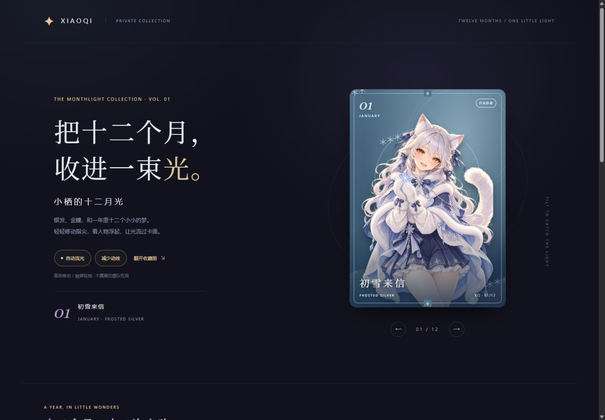
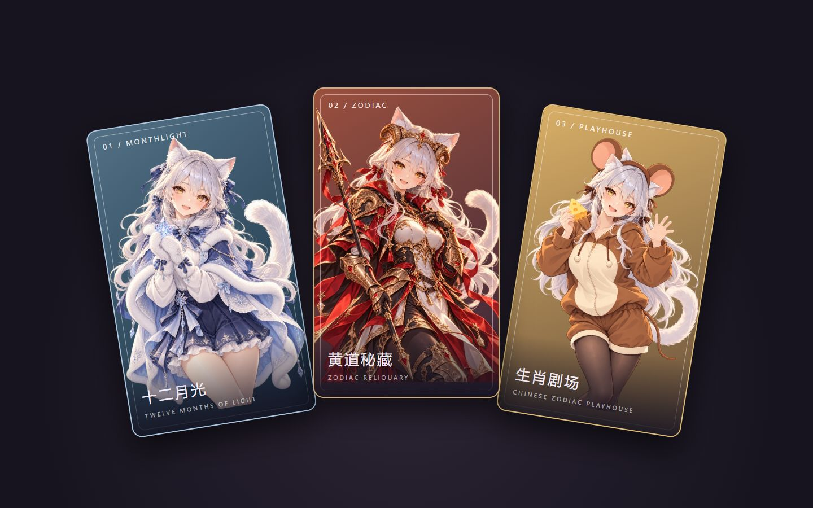
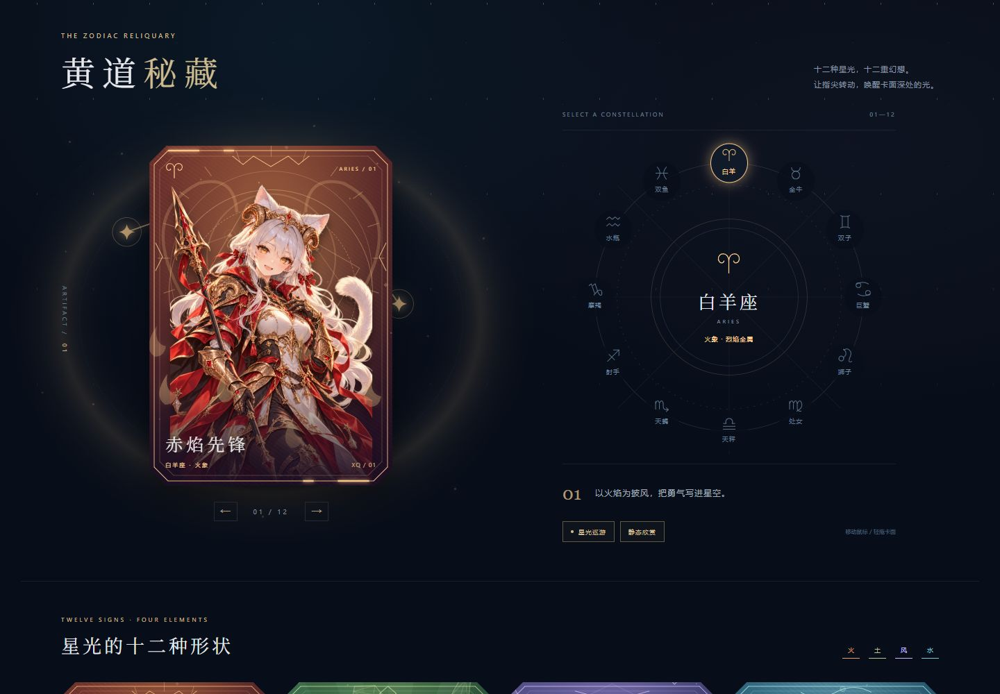
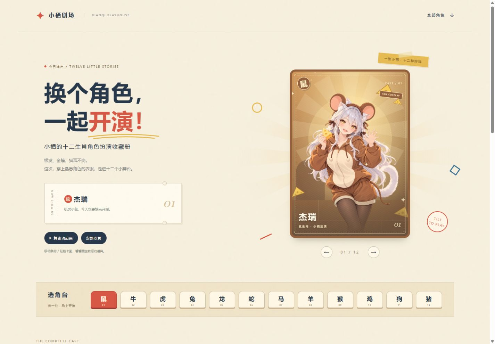

03 / PLAYHOUSE
生肖剧场
生肖同人 COS
银发、金瞳、猫耳不变。换上十二套角色服饰，一起走进剪纸小舞台。
12 张卡片 · 剪纸舞台 · 同人 COS
怎样开始？
点击「在线欣赏」即可打开整套卡片，无需安装。喜欢的话，下载离线包，解压后双击 index.html，断网也能看。
电脑用鼠标移动，手机轻拖卡面；选择「减少动效」「静态欣赏」或「安静欣赏」，可以静静看卡。
生肖剧场为同人 COS 创作，非官方联名；相关角色权利归原权利方所有。星座场景为奇幻视觉设计。使用咨询